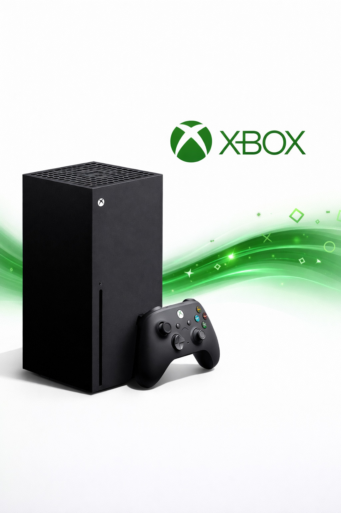
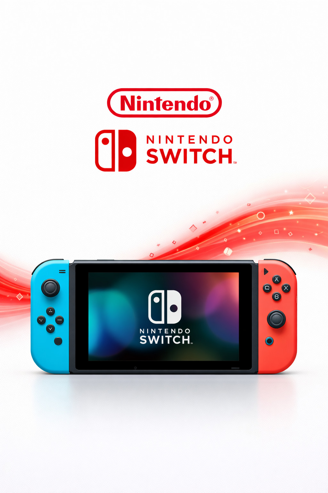
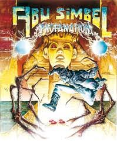
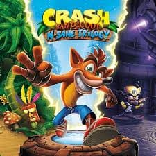
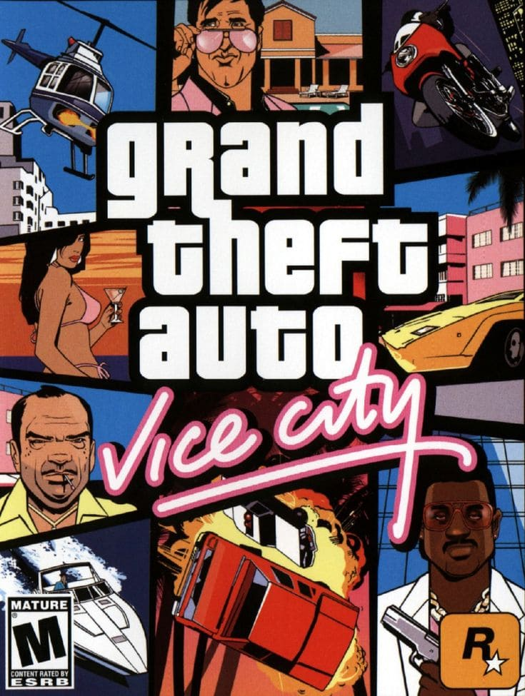
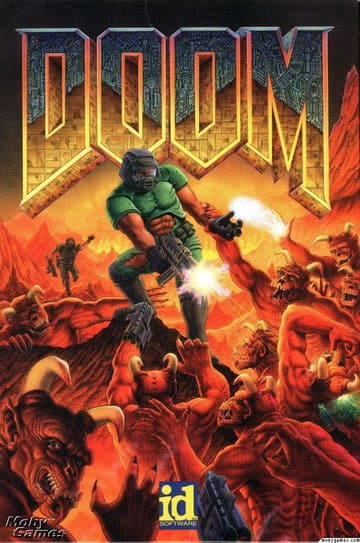
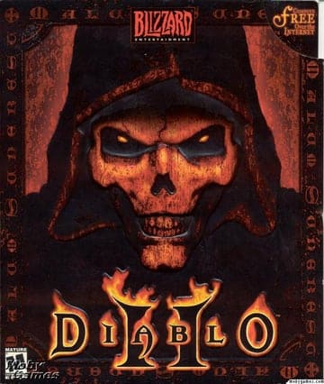

Bienvenido a Karasu, un espacio creado para los verdaderos amantes de los videojuegos.
Aquí encontrarás información sobre la historia del gaming, los productos más populares,
galerías con los mejores títulos y novedades del mundo gamer.
En Karasu buscamos compartir
la pasión por los videojuegos y ofrecer contenido interesante para jugadores de todas las edades.
Karasu
Origen de los videojuegos
Los videojuegos comenzaron a desarrollarse en la década de 1970 con las primeras
máquinas arcade.
Con el paso del tiempo evolucionaron desde gráficos simples
hasta experiencias complejas con mundos abiertos, historias profundas y
tecnología avanzada.
Evolución de las consolas
Las consolas han cambiado mucho con los años. Desde las primeras consolas
domésticas hasta las actuales, que ofrecen gráficos en alta definición,
juegos en línea y experiencias cada vez más realistas para los jugadores.
Videojuegos mas influyentes
A lo largo de la historia han existido videojuegos que marcaron generaciones y cambiaron la forma de jugar. Estos títulos ayudaron a que la industria del gaming creciera y se convirtiera en una de las más importantes del mundo del entretenimiento.
| Consola | Empresa | Año |
|---|---|---|
| Atari 2600 | Atari | 1977 |
| Nintendo Entertainment System | Nintendo | 1983 |
| PlayStation | Sony | 2020 |
| Videojuegos | Año | Genero |
|---|---|---|
| Pac-Man | 1985 | Plataformás |
| Super Mario Bros | 1985 | Plataformás |
| The Legend of Zelda | 1986 | Aventura |
Productos
PlayStation 5

La PlayStation 5 es una consola de última generación con gráficos avanzados, carga rápida y una gran variedad de videojuegos para todos los gustos.
Xbox Series X

La Xbox Series X ofrece alto rendimiento, resolución 4K y acceso a una amplia biblioteca de juegos a través de su servicio en línea.
Nintendo Switch

Nintendo Switch es una consola híbrida que permite jugar tanto en casa como en modo portátil, con títulos populares para toda la familia.
Galeria de Videojuegos





Contacto
Si tienes alguna pregunta sobre nuestros productos o quieres más información sobre consolas y videojuegos, no dudes en contactarnos.
En Karasu estaremos felices de ayudarte.
Contacto
Si deseas más información sobre nuestros productos o tienes alguna pregunta sobre el mundo de los videojuegos, puedes comunicarte con nosotros.
Empresa: Karasu
Teléfono: +57 300 123 4567
Correo: contacto@karasu.com
Dirección: Medellín, Colombia